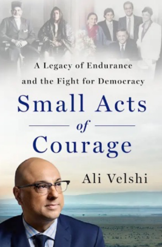
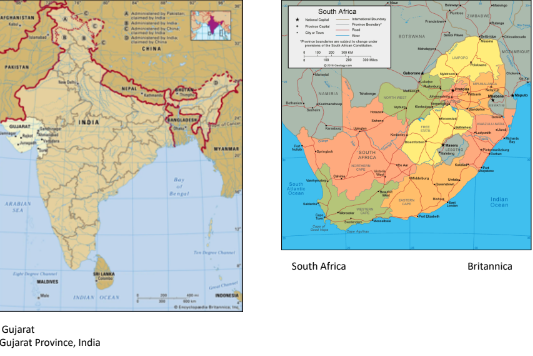
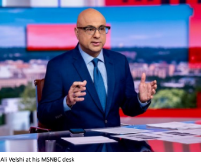
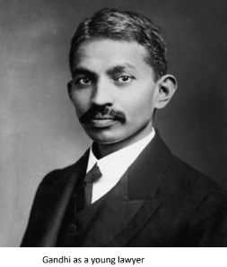
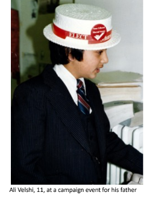

Reacting to the 1906 establishment of the Union of South Africa, Gandhi would develop in Ali Velshi’s words “a moral vision that spoke to the need for dignity and self determination for all humanity.” (“Small Acts of Courage”). Later called “satyagraha,” the evolving movement stood for truth, love and non-violence. The Keshavjee family was not initially engaged in the movement outside a continuing friendship with Gandhi, but soon would. To build an educated following Gandhi built an ashram called Tolstoy Farm. Gandhi urged by his friend Velshi to enroll his son Rajabali, age seven. “Tolstoy Farm trained and equipped my grandfather in the same way a paramilitary camp might train a young revolutionary soldier, only it trained him for an entirely different kind of war, arming him with self-discipline and self-reliance instead of hand grenades and a rifle.” (“Small Acts of Courage”).

Velshi recounts one his most vivid childhood memories… and lessons: his father’s campaign for political office. At age 11, Velshi was old enough to help his father with his first political campaign, for a seat in the provincial parliament. There were no “brown” elected office holders, and his father Murad Velshi, always very active in the community, decided to step up. Young Ali went door to door with his father and talked to voters. He loved it. The election results came when he was riding home with his dad election night at 8:01 (polls closed at 8). His father’s loss was called immediately, the only race called so early. “I was shocked… I can’t believe we lost, I said…of course we lost, [his father] said with the biggest smile. ‘We were never going to win…We ran because we could’….That was the night I learned that there is a deeper way to think about politics…when I hear people run down politics and politicians, I recoil. Because cynicism about politics is actually a luxury of those who have never had to experience life without it.” (“Small Acts of Courage”).
Murad Velshi ran again, this time successfully in 1987. His son was much more involved now at 17. “It was a seminal moment for immigrants in their civic and democratic experience in Toronto.” (“Small Acts of Courage”)
Despite his love of politics, Velshi did not pursue it as a participant. He studied religion at Canada’s Queen’s University (from which he would later receive an honorary doctorate), discovering his ability to write and tell stories He shifted into journalism and after graduation moved from local news to national financial reporting. His first day in the US to work for CNN, he drove over the George Washington bridge on his motorcycle two days after the destruction of the twin towers.
‘I arrived in the shadow of 9/11…that was something else…” he told me. “One of the downsides of 9/11 is immigration is now seen in America as a security matter… It backs up the impression that some people have that immigration is a negative, that is a risk to the country. We have to start thinking about that very differently…We have to start thinking of immigration in part as a labor imperative, in part as a societal and population imperative, and in part we have to get away from the concept that it’s charity… Fundamentally we need these people…we just have to decide to have the will to do this.”